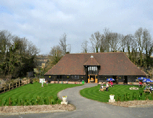
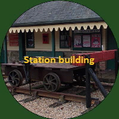
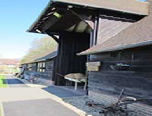

Step back in time at our railway museum and countryside centre. Explore 290 years of rural heritage in the heart of Kent.
From a 1930s railway station to a 290-year-old countryside barn

A 290-year-old barn housing a museum of countryside tools, crafts and household items from across the years.

Be transported back to a 1930s railway station as it would have been on the Elham Valley Line.
A nature trail linking the barn to the museum. Discover flora and fauna, and pause at the dipping pond.
The Elham Valley Line Trust was formed in 1984 dedicated to preserving railway history, countryside crafts and to provide educational facilities. We are a registered charity run solely by volunteers.
Learn More
Special events throughout the season
| Event | Date |
|---|---|
| Re-opening | 5 April |
| Easter Bunny Hunt | 18 – 21 April |
| Miniature Steam Week | 10 – 11 May |
| Military Weekend | 1 June |
| Event | Date |
|---|---|
| Summer Fayre | 16 August |
| Apple Pressing | 27 – 28 September |
| Spooky Weekend | 25 – 26 October |
| Festive Craft Fayre | 15 – 23 November |
Open Saturdays, Sundays and Bank Holidays — 10:00 to 16:00, Easter to November